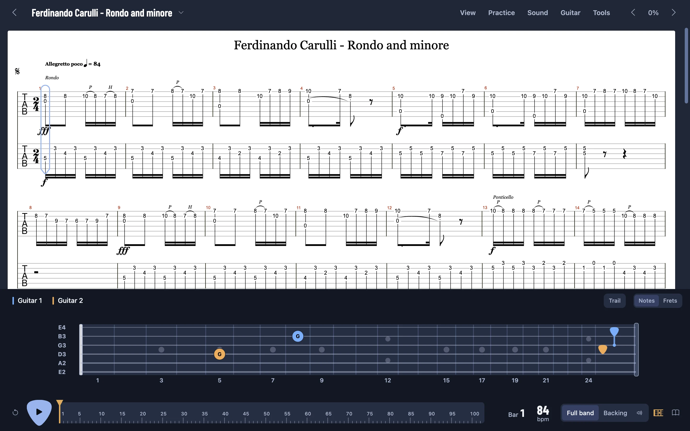

Open your first tab
This page shows you how to play a tab and add it to your library.
Play a tab
In this guide, select means click with a mouse or tap on a touch screen. Where an action also works from a keyboard or a game controller, the guide says so.
- Select Open a single file. This plays a tab without adding it to your library. You find it on the start screen. After your library has songs, the start screen no longer appears. Then select Tools in the library views at the top of the Library, and select Open file.
- Choose a Guitar Pro file (
.gp,.gp3to.gp5or.gpx), a PDF or a text tab. - To play, select Play / Pause in the playback dock, press Space, or press A on a game controller. Use the same control again to pause.
A Guitar Pro tab plays through the built-in synth, and the cursor follows the music. If a PDF or text tab has no audio loaded, Space turns the page. You can also turn pages by selecting Next page or Previous page in the top bar, selecting the right or left half of the page, pressing the arrow keys, or pressing RB or LB on a game controller.

Add a tab to your library
- Open the Library.
- In the search field at the top, type the name of a song, an artist or an album. MajesticTab searches the music catalog and fills in the artist, cover, year and track order.
- To add an album, select the album and then select Add album. To add one song, select Add song next to a track in the album's tracklist.
- On the song, select Add tab and choose your file.
If the catalog doesn't list your music, type its name and select Add song on the result Add "your text" as a custom song. If you already opened the tab, open the song menu and select Save to library.
Learn the reader controls
The reader groups its controls under five words: View, Practice, Sound, Guitar and Tools. To slow a part down and repeat it, start with Practice. The reader describes all five.